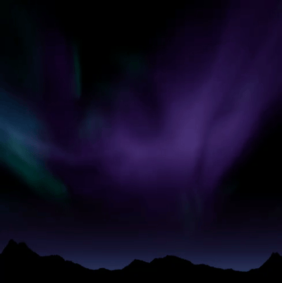
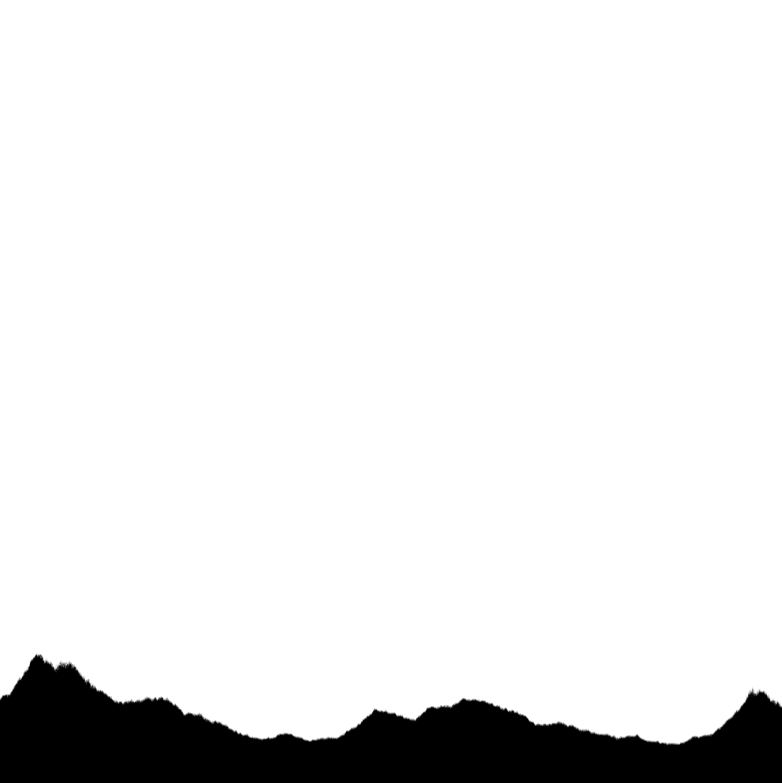
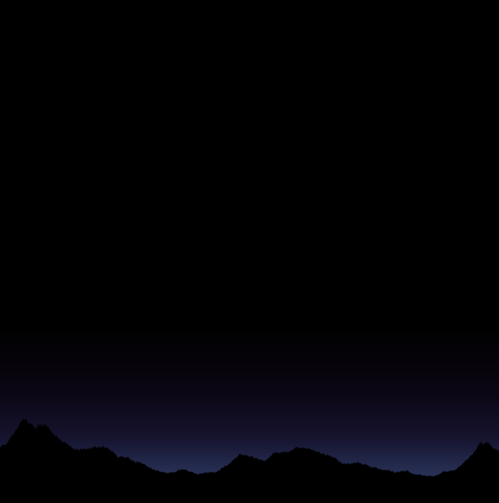
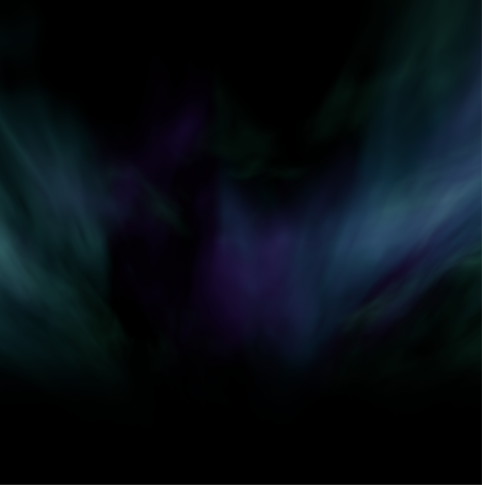

Fractial Brownian Motion
Ziel: Realistische Darstellung von Bergen und Polarlichtern
In diesem Praktikum wollen wir eine realistische Darstellung von Bergen
erreichen. Außerdem werden wir unsere bestehende Darstellung der Polarlichter
verbessern. Dazu werden wir prozedurale Muster mit Hilfe von
Fractial Brownian Motion erzeugen.
Das Ergebnis soll dann in etwa wie die folgende Grafik aussehen:

Vorbereitung
Die folgenden Aufgaben setzen voraus, dass Sie die zugehörigen
Vorlesungmaterialien vollständig durchgearbeitet haben:
Aufgaben
Die folgenden Teilaufgaben lösen Sie bitte mit Hilfe des
Editors, in dem Sie
Ihre Lösungen interaktiv entwickeln und testen können.
- Nachthimmel
Legen Sie einen dunklen Hintergrund an, der zunächst den
gesamten Canvas bedeckt. Initialisieren Sie in der main-Funktion die
Variable uv so, dass jeder Pixel eine positionsabhängige 2D-Koordinate im
Bereich [-1, 1] erhält. Dazu müssen Sie den Wertebereich
von [0, 1] auf [-1, 1] transformieren.
- Farbverlauf
Erzeugen Sie einen dezenten Farbverlauf, der die dunkle Umgebung durch
etwas Restlicht erleuchtet. Der Effekt soll in etwa wie folgt aussehen:
- Berge mit FBM
Implementieren Sie mit Hilfe von Fractial Brownian Motion und
geeignetem Noise eine Bergkette. Dieses Muster erhalten Sie durch
mehrfaches Überlagern von leicht veränderten Noise. Das Ergebnis
sollte in etwa wie folgt aussehen:

- Kombinieren von Hintergrund und Bergen
Kombinieren Sie nun den Hintergrund (mit Farbverlauf) und
die erzeugte Bergstruktur aus den letzten beiden Aufgaben.
Das Ergebnis sollte in etwa so aussehen:

- FBM für Polarlichter
Erweitern Sie Ihre Polarlichter aus dem vergangenen Praktikum
durch die Nutzung von Fractial Brownian Motion und
Noise. Das Ergebnis sollte in etwa wie folgt aussehen:

- Alles zusammen
Kombinieren Sie nun Ihre Polarlichter, Berge und Hintergrund.
Das Ergebnis sollte in etwa wie folgt aussehen:
Herzlichen Glückwunsch! Sie haben es geschafft -
wir kommen unserem Polarlicht-Nachthimmel immer näher 😀!